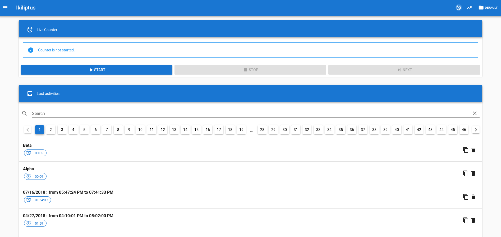
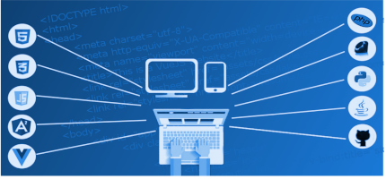
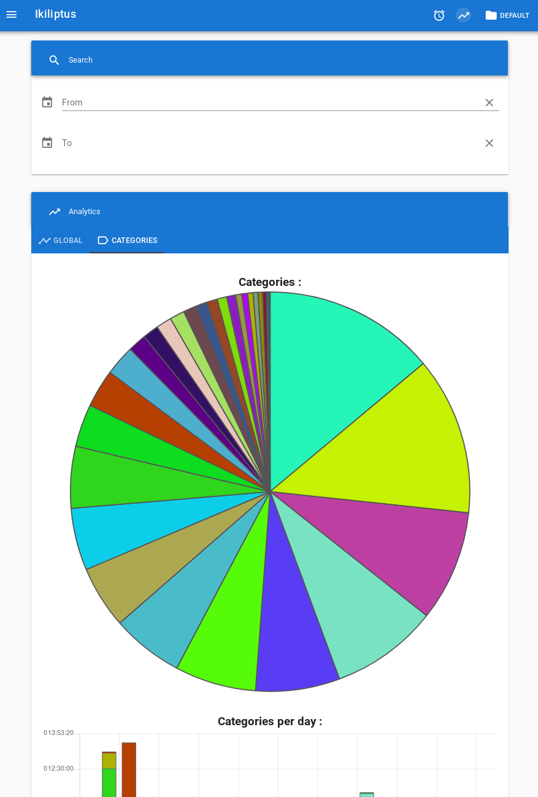

An offline and mobile-friendly, time tracker and analyzer, without server needed.

We cannot assure you that we cannot touch your data if we cannot prove it to you !
So, you can get, check and edit the source-code of this software !
And you use it as you want thanks to the MIT licence !
The application is designed to work offline, so you can track you time even offline !

The application is portable. Thank to web interoperability, you can make it run on all the platform you need : Windows, Linux, Mac OS, Android, iOS, ...
You can split your activities, so for example you can :
You just need to download the static files (like html, css and javascript) and open it in your (modern) web-browser.
You don't need of a backend because all your data is stored in your browser.
You can save your activities of your session in a single file, and/or save them in your CouchDB server.
We cannot touch see your data, so always keep in mind that you are responsible of your data !
Build with a Material Design framework, the application looks like to any other.
You can add custom fields for each session, so for example you can :

You can filter your data with your custom fields and then render them in sweet charts.
Otherwise, why collect all this data ?
All the items of the User Interface can be translated.